§0 · 卷首摘要
系统记住了事实，却没有人接住问题
一条异常从发现到结果验证，全程可回放——这是本方案唯一要证明的事。
问题。圣农已建成扎实的数字底座，但一次真实经营异常（如一笔可疑低价成交）仍要跨系统查找、跨部门沟通、人工催办，平均数天才能变成一件有人负责的经营问题。系统记住了事实，却没有人接住问题。
主张。保留 SAP、POS、WMS、CRM、飞书等现有系统的权威地位，在其上方建设一条“经营事件循环”——规则负责把事实变成待调查事件，Agent 负责把事件调查成证据充分的决策材料，管理层负责把材料变成行动，结果验证负责判断行动是否有效。一条异常从发现到结果验证，全程可回放。
边界。价格域先行试点，闭环结构必须完整，范围必须克制。圣农真实字段、接口、权限、组织映射、目标租户能力和端到端效果，全部为 待企业验证，并在第八章以一张清单完整列出。本报告 24.9 元案例为方案模拟，不代表圣农真实经营事实。
事实标记约定。正文关键事实主张按五类标注——圣农公开事实官方技术依据行业验证经验本方案设计判断待企业验证。未标注的判断均为方案内部的逻辑陈述。
总原则。本方案是试点设计（logic_final / pilot_design），不代表圣农真实系统已完成接入，也不代表生产系统已建成。
§1 · 问题与起点
圣农已经走了多远，难在哪
数字化前半程解决的是“看见数据”，后半程要解决的是“接住问题”。
1.1 已经建成的数字底座
- 圣农 2024 年报披露“SAP+智慧农场”已上线，建立了全产业链数字化管理基础；2025 年报进一步提出“AI+BI”双轨落地和智慧中台建设。圣农公开事实
- 官方赛题披露的零售场景覆盖 10 个区域、300 多名业务员和多个渠道，日报、经销商台账、POS 流水和价格巡查记录分散在 6 个系统中，价格异常从投诉到处置平均需要 4—5 天。圣农公开事实
这两组事实并不矛盾，恰恰说明问题所在：数字化前半程解决的是“看见数据”，后半程要解决的是“接住问题”。
1.2 真实矛盾：数据都在，问题接不住
| 现实痛点 | 直接后果 | 本方案的设计回应 |
|---|---|---|
| SAP、POS、WMS、CRM、飞书等系统分散，口径和接口不同 | 一个字段只是信号，不能直接说明经营问题 | 用业务对象、关系和受控查询把分散字段组织成统一语义 |
| 国内企业很难把存量系统收拢成一套中心化平台 行业验证经验 | 全集团一次性建模成本高、周期长、阻力大 | 先做价格域微型 Ontology，保留权威系统作为事实源，按业务域逐步扩展 |
| 一个异常往往缺少促销、审批、库存、毛利等上下文 | Agent 过早下结论，或把大量无关数据放进上下文 | 语义层先输出经营事件包 v1，再由 Skill 按需补证；事件包不预装全部调查证据 |
| 同一异常可能重复到达，多个信号也可能被错误合并 | 案件数量失真，责任和复盘无法解释 | 规则做确定性去重和初次归并；不确定关系保持独立，强制提交 FDE 和领域专家复核 |
| 数据会迟到、修正、冲突或无权限 | “没有数据”被误读成“没有问题” | 记录业务时间、来源时间、接收时间、版本和查询状态，区分 no_data / forbidden / stale / conflict |
| 一次处理结束后，经验散落在聊天和会议里 | 下一次仍从零开始 | 案件、证据、Skill 版本、人工修正、决策和结果持续写入经营事件与证据库 |
（FDE：Field Engineer，现场工程师，指深入企业现场、与一线专家共同完成配置和校准的工程角色。）
1.3 我们的回答：一条经营事件循环
读到这里，一个直接的问题是：既然不推倒重来，那新东西建在哪？答案是建在现有系统上方的一条循环上——
我们不另起炉灶，也不把 Agent 停留在问答层。以企业现有权威系统为根，把每一次真实经营异常转化为可调查、可决策、可执行、可验证的闭环。
这对企业意味着什么现有 IT 投资全部保留，新增投入集中在“从异常到结果”这一段过去靠人肉接力的路上。
1.4 行业参考与圣农取舍
参考资料提出的国内落地方向是“分域本体 + 语义映射 + 分布式执行”，并指出国内企业存在遗留系统、SOA、微服务等多元架构，难以直接复制 Palantir 式集中式平台。行业验证经验
国外经验：用统一本体和执行层让 Agent 理解并调用企业能力 国内约束：系统分散、数据异构、存量系统不能推倒重来 圣农取舍：小范围建模 + 受控映射 + 分布式查询 + 事件驱动调查
因此“范围更克制”不是能力不足，而是针对中国企业数字化现状做出的工程选择：试点范围必须小，但闭环结构必须完整。
§2 · 方案总览
一条主链，各就各位
规则负责把事实变成待调查事件，Agent 负责把事件调查成证据充分的决策材料，管理层负责把材料变成行动，结果验证负责判断行动是否有效。
2.1 技术路线：权威系统为根，语义层为干
技术路线上采用“方案二”：SAP 等权威系统持续产生和更新业务事实；KWeaver（开源语义与知识工程平台）通过数据更新通道获得事实变化、更新语义对象，并运行我们配置的经营规则识别候选异常。权威系统仍是正式事实来源，KWeaver 不取代 ERP，也不要求 SAP 先给出“异常”结论。本方案设计判断

2.2 主链文字版
SAP/POS/WMS/CRM/飞书等权威系统持续产生和更新业务事实 → KWeaver 通过事件、CDC、Webhook、API 或增量轮询获得事实变化 → 更新业务对象、关系和受控查询视图 → 语义层常驻运行异常检测规则，命中后生成候选异常信号并逐条留痕 → 事件解析规则启动：清洗、确定性去重、初次归并、分类，全程留痕 → 创建经营事件 E1，输出经营事件包 v1 → 原子建立调查案件 C1，可靠落库后发布内部 case_created，启动 Agent → 同时按企业责任路由发送飞书“案件已建立”通知 → Agent 按事件类型加载领域 Skill，由小到大查询证据 → 必需信息只能由人提供时，发起人工补证；信息不齐不分析 → 信息齐全并满足停止条件后，形成决策就绪包 → 管理层决定：补证重查 / 知悉暂不处理 / 接受风险 / 确认误报或合法例外 / 批准执行 → 批准执行后进入责任执行；执行成功只标记任务完成，案件进入待结果验证 → 达到经营目标才正式关闭；未达成则围绕同一案件返回调查
注意两个细节：case_created 是系统内部的可靠启动信号，飞书通知是面向人的协作投影，二者并行但不是同一条消息；数据更新通道是 KWeaver 的工程实现能力，不单独设“接入层”业务节点，Kafka 可承担变更消息运输，但不是必经节点。
2.3 规则 / Agent / 人 / 验证：一句话分工
| 角色 | 负责什么 | 不负责什么 |
|---|---|---|
| 确定性规则（我们配置并版本化） | 异常检测、清洗去重、初次归并、分类——把事实变成待调查事件 | 不猜测模糊关系，不替人做经营判断 |
| Agent（Aily 平台 + 领域 Skill） | 沿证据由小到大补证，把事件调查成决策材料 | 不创建新事件，不改写事件包，不越过停止条件 |
| 管理层与责任人 | 补证、决定、执行、确认结案——承担经营责任 | 不替系统补字段，不用口头结论代替留痕 |
| 结果验证（回读权威事实） | 判断行动是否真正改善经营结果 | 不用任务完成状态冒充问题解决 |
2.4 固定术语：避免“都叫事件包”的误读
| 术语 | 含义 |
|---|---|
| 候选异常信号（CandidateSignal） | 某项事实已偏离经营基准、值得调查，但还不是违规或根因结论 |
| 经营事件（BusinessEvent） | 把一个或多个相关信号组织成的一件待调查经营问题 |
| 经营事件包 v1（EventPackage v1） | 语义层完成事件解析后输出的正式版本化结果：事件类型、核心对象、已确认事实、来源、版本、未知项和解析依据；不等于完整调查证据 |
| 调查案件（InvestigationCase） | 围绕经营事件开展调查、决策、执行和验证的工作载体；价格试点用 E1/C1 同号关联 |
| 待补证事实汇总报告（未分析） | Agent 等待人工补证期间形成的中间记录，只含事实、来源、版本、查询状态和缺口清单 |
| 决策就绪包 | 调查达到停止条件后，把当前有效证据汇总成的管理材料；不代替管理层决策 |
如果把信号、经营事件、经营事件包、调查案件和决策就绪包笼统叫“事件包”，就会误以为所有信息在建案时一次性收集。固定术语的目的正是避免这个误读。这对企业意味着什么：每个角色（含 Agent）的责任边界写在链上，出了问题能定位到具体环节，而不是“系统说的”四个字。
§3 · 语义层
把分散事实变成可信经营事件
一个原始字段只能说明数值变了，不自带经营含义——语义层的价值，是为调查建立可信起点。
3.1 微型 Ontology：先做价格域，不一上来建全集团
一笔低于候选基准的成交价，可能来自违规低价，也可能来自合法促销、区域差异、临期处理或错误的适用基准。价格域微型 Ontology 以商品、门店、成交、候选价盘、促销和审批为参考对象。本方案设计判断这只是用于验证平台和流程的占位模型，不是圣农真实首版对象清单；库存、销量、毛利等是否纳入真实首版，由 FDE 和一线专家结合企业资料确定。真实对象、主键、关系和字段仍需现场校准。待企业验证
3.2 候选异常信号：值得调查，不等于违规
异常检测规则在语义层常驻运行；命中后系统保存的是候选异常信号，而不是“已经违规”的结论。信号类型只描述观测到的偏离（例如“成交价低于候选匹配价格基准”），不能把候选价盘提前写成已经确认适用。普通事实变化只用于更新语义对象，不逐条创建案件。
3.3 事件解析：清洗、确定性去重、初次归并、分类
候选信号出现后，事件解析规则才启动（不持续空转）。每次解析运行都保存：输入信号集合、规则 ID 与版本、清洗前后结果、确定性去重键和处理结果、初次归并主键与时间窗、分类候选与最终依据、运行状态、失败位置和错误原因。归并只有三个出口，没有第四个：
| 情形 | 处理 |
|---|---|
| 稳定主键明确不同 | 正常保持独立，分别继续处理；这不是错误 |
| 事件类型和核心对象明确但关系模糊 | 保持独立成案，强制提交 FDE 和领域专家复核关系 |
| 事件类型、核心对象、来源版本或解析依据无法可靠确定 | 停在成案前，不输出事件包、不创建案件 |
被判为重复的信号只标记处理结果，不删除原记录。系统不强行猜测合并。
3.4 经营事件包 v1：语义层交给 Agent 的正式起点
全部解析步骤成功后，才创建经营事件 event_id 并输出经营事件包 v1。它完整承载本次语义解析结果，但不预装销量、库存、毛利、促销、审批等尚未取得的调查证据——这些留给 Skill 按需查询。“停在成案前”是一个正式状态：语义层还没有把信号解释清楚时，宁可不成案，也不给 Agent 一个不可靠的起点。后续新信号或新证据提示事件语义可能变化时，必须回到语义层重新解析；只有重解析确认变化后才输出 v2/v3 并保留旧版本，Agent 和案件服务都不能自行改写事件包。
3.5 能力基座：三层分开，不混为一谈
| 层次 | 已知职责 | 边界 |
|---|---|---|
| KWeaver 通用能力基座 | 连接数据源，把表与字段映射为业务对象和关系，提供结构化查询、API/MCP、上下文加载、权限和追踪 | 公开能力边界见能力核验台账；候选承载价格域微型 Ontology 和受控查询 官方技术依据 |
| 圣农语义业务能力 | 真实对象、主键、关系、经营口径、异常检测规则、事件解析规则 | 由项目团队、数据人员和企业领域专家共同定义，不是 KWeaver 开箱即得 待企业验证 |
| Agent 调查能力 | 按事件类型加载 Skill，沿对象关系补证 | 通过 KWeaver 查询事实，通过知识库查询制度，不直接猜原始字段 |
当前不能确认：SAP 是否有可直接使用的原生连接器、真实字段与主键、更新时效、生产权限、Aily 租户能力和部署条件，全部标记 unknown。待企业验证
这对企业意味着什么。语义层先把“这件异常到底是什么”判断稳了再往下走，企业不会因为一个草率的起点让 Agent 白跑。
§4 · 渐进调查
Agent 沿着证据走，人在关键处接住
Agent 在最关键处被制度性地“按住手”，人的责任没有被技术稀释。
4.1 一事件一案件一上下文
调查运行单元固定为：一个经营事件 E1 → 一个调查案件 C1 → 一个独立 Agent 上下文 A1 → 一个领域主 Skill。价格 Agent 可以为当前案件查询库存、销量、毛利，但跨对象查询不等于切换成另一事件的 Skill，也不允许它自行创建另一件经营事件。只有其他领域自己的规则独立命中，才会另行形成 E2/C2/A2。
4.2 领域 Skill 通用模板：只定义方法，不虚构圣农规则
本方案不设计圣农价格 Skill 的真实证据清单、查询顺序、阈值和停止条件——当前没有圣农真实系统资料和一线调查经验，直接编写等于把假设伪装成事实。最终交付是一套可复用的领域 Skill 通用模板，企业专属内容由 FDE 和一线领域专家现场填充并通过历史案例回放验证。模板遵循六条核心思想：
- 事件类型驱动：Agent 依据事件包中的事件类型和核心对象自主选择 Skill，不由案件服务硬编码。
- 一个事件一个调查上下文：跨对象查询仍服务于当前经营事件。
- 由小到大取得证据：优先范围小、成本低、确定性高的查询，满足扩大条件才扩大。
- 事实与分析分开：必需信息缺失时只形成《待补证事实汇总报告（未分析）》，不得分析。
- 异常状态不能冒充业务事实：
no_data / forbidden / unavailable / stale / conflict / not_applicable分别处理，不能统一解释成“没有问题”。 - 全过程版本化留痕：每次查询、补证、分析、停止理由都引用确切 Skill 版本、证据版本和案件编号。
4.3 人工补证：分层通知，不群发轰炸
当分析所需的必需信息只能由人工提供时，采用“分层通知、并行搜集、信息齐全后再分析”：
| 协作层级 | 默认动作 | 即时通知规则 |
|---|---|---|
| 补证责任人 | 收到明确待办：案件、所缺信息、用途、提交入口、期限、完整性要求 | 创建请求后立即通知，必须处理或明确反馈无法提供的原因 |
| 直属负责人或案件负责人 | 看到补证内容、责任人、期限和案件阻塞状态，负责监督 | 创建请求后立即知情；提交、拒绝或超时时同步更新 |
| 更高管理层 | 按组织与权限在看板中实时查看 | 普通补证不逐条群发；逾期、拒绝、高影响或持续阻塞时才逐级即时升级 |
| FDE 与平台团队 | 查看数据源失败、权限失败、无匹配 Skill 和异常运行 | 只在平台、权限或能力问题阻塞补证时介入 |
其中“高影响”只能来自已配置的确定性规则、已确认事实阈值或授权人员标记，不能由处于等待状态的 Agent 自行分析得出；具体标准需圣农现场确定。待企业验证
4.4 信息不全，不分析
| 允许继续做 | 明确禁止做 |
|---|---|
| 查询不依赖该缺口的其他事实 | 推断异常原因 |
| 记录事实、来源、时间、版本和查询状态 | 判断人员或组织责任 |
| 汇总已取得的证据和仍缺少的信息 | 解释经营影响、比较方案或提出处置建议 |
| 更新补证请求、提醒、升级和案件进度 | 生成决策就绪包，或把中间报告包装成调查结论 |
《待补证事实汇总报告（未分析）》只说明已经查了什么、取得了什么、来自哪里、哪些查询失败、仍缺什么、补证请求由谁处理。即使销量、库存、毛利等客观数值已经取得，也只能按原始事实记录，不能在必需信息补齐前解释这些数值意味着什么。人工长期不补证时，案件持续保持“待人工补证”，系统按分层规则提醒和逐级升级，但不得猜测结论或强行关闭案件。
4.5 决策就绪包：材料交给人，决定权也交给人
人工补证写入案件并通过完整性确认后，Agent 以“事实汇总报告 + 补证内容”为共同输入恢复分析；满足停止条件后形成决策就绪包——明确列出已确认事实、仍未知项、可能的合法例外和建议，并提示授权负责人复核合法例外。系统不承诺事先穷尽所有例外，也不替管理层行使决定权。
这对企业意味着什么。Agent 在最关键处被制度性地“按住手”，人的责任没有被技术稀释，管理者拿到的每份材料都可追溯。
§5 · 走一遍
一笔 24.9 元的交易怎样走完整个闭环
从 SIG-0001 到 E1 再到 C1：变化的是处理阶段，没变的是同一件经营问题、同一条证据链和同一套责任记录。
5.1 案例起点
POS 交易 TX-9001 记录商品 P001 在门店 ST021 的实际成交价为 24.9 元；异常检测规则匹配到候选价格基准 29.9 元。此时只说明“值得调查”——尚未确认 29.9 元是否真正适用于该门店、商品、渠道和时点，也未确认是否存在合法促销或审批例外。
5.2 分支与回流
若 T14 目标未达成：不新建案件，围绕原 C1 建立负责人、一线专家、FDE 与 Agent 的专项协作会话并返回调查。若完整调查确认 24.9 元属于有效授权促销：按“合法例外”结案，记录例外依据、范围、有效期和溯源结果——这并不证明系统出错，候选异常本来就只表示“值得调查”。若促销事实本应已同步且规则明确要求排除，却因源数据未更新、映射错误或规则版本错误仍产生信号：按溯源结果定位为对应层的“系统误报”。若促销审批缺失或真假无法确认：不得结案。
这对企业意味着什么。一笔 24.9 元的异常不再需要业务员的投诉来启动，也不会在部门接力中丢失；每一步谁做了什么、依据什么，事后都能回放。
§5 续 · 批准之后发生什么
决定落地之后，闭环才走完后半程
管理决定不是终点：决定如何分流、任务如何到人、结果如何验证、案件如何关闭，各有门槛。
§5 的时间线收束于 T15 结案；本节把 T11 管理决定之后到正式关闭之间的四段机制展开。案例锚点仍为方案模拟，机制条款为本方案设计判断。
续1 · 管理审批分支：四类走向
管理层阅读决策就绪包后，走向只有四类：本方案设计判断
| 管理决定 | 案件走向 | 必须留下什么 | 是否结案 |
|---|---|---|---|
| 要求补证或重新调查 | 返回 Agent 调查（回到调查取证中） | 决定人、依据、返回范围 | 否 |
| 已知悉暂不处理 / 风险接受 | 保持打开，持续看板监督，到复核时间或条件触发后返回调查 | 授权人、依据、复核时间、未决风险；不标记“已解决” | 否——治理状态，不是结案 |
| 确认系统误报 / 合法例外 | 无需执行，由授权负责人确认后正式关闭 | 溯源结果、依据、适用范围、有效期 | 是（三类结案之二） |
| 批准执行 | 进入责任执行；执行成功只标记任务完成，案件进入待结果验证 | 审批人、依据、时间、适用范围 | 否——闭环才走半程 |
前后两次决定为什么不互相覆盖：每轮调查、决策和验证都持续追加案件记录与证据；“已知悉”与“风险接受”只是打开状态下的治理记录，后续决定仍在原案件中追加形成，旧决定与旧版本全部保留——任何版本都不能删除原始 signal_id、event_id、case_id 或历史证据。本方案设计判断
续2 · 责任任务与协作投影
四类走向里，只有“批准执行”才下达责任任务；任务按四项要素落到人：本方案设计判断
| 要素 | 合同 |
|---|---|
| 责任人 | 按责任路由落到具体用户或群，不发给抽象角色 |
| 期限与动作 | 任务下达、完成、失败或超时都是里程碑，按责任路由同步 |
| 回执 | 动作回执写入执行验证档案；任务完成只更新执行状态，不冒充问题解决 |
| 阻塞出口 | 执行失败或受阻：围绕同一案件建立专项协作会话并返回调查，不新建案件 |
协作侧从建案起就是两条并行通道，二者不是同一条消息：
内部运行：案件可靠落库 → 发布 case_created → Agent 开始调查 人员协作：案件可靠落库 → 责任路由 → 飞书具体用户或群收到“案件已建立”通知
责任路由：事件类型 + 核心业务对象 + 所属组织/区域 + 当前里程碑 → 责任角色 → 飞书租户内具体用户或群
飞书平台不会自动理解“价格负责人”“区域负责人”这类业务角色，责任路由规则必须由企业维护；圣农真实组织树、角色到人员的映射、无人负责时的兜底人，均为 待企业验证。通知采用分层四级，不群发轰炸：本方案设计判断
| 层级 | 默认动作 | 即时通知规则 |
|---|---|---|
| 责任人 | 收到明确待办：案件、事项、用途、入口、期限、完整性要求 | 创建后立即通知；必须处理，或明确反馈无法完成的原因 |
| 直属负责人 / 案件负责人 | 看到内容、责任人、期限与阻塞状态，负责监督 | 立即知情；提交、拒绝或超时时同步更新 |
| 更高管理层 | 按组织与权限在看板实时查看 | 普通进展不逐条群发 |
| 逐级升级 | — | 仅在逾期、拒绝、高影响或持续阻塞时逐级即时升级；“高影响”只能来自已配置的确定性规则、已确认事实阈值或授权人员标记，具体标准 待企业验证 |
两条纪律贯穿全部通知：其一，已送达 ≠ 已读 ≠ 已知悉——已知悉必须来自明确反馈，不能由已读自动推断；飞书公开接口对机器人消息已读查询存在主体和时间范围限制，已读只是受限协作信号，取得后及时留痕。官方技术依据其二，每次创建、通知、提醒、升级、提交、退回与确认完成，都把路由规则版本、实际收件人、消息 ID、发送结果与知悉动作立即追加到同一案件档案，不攒到结案补写。本方案设计判断
飞书在这里始终只是协作投影：提醒与专项会话不改变案件状态，经营事件与证据库的权威地位不变（来源 K11）。投影面向人长什么样，另见“飞书能力看板”演示页（演示页另行交付），本节不展开。
续3 · 里程碑质量门：任务完成 ≠ 经营问题解决
| 状态 / 节点 | 回答什么 | 系统动作 |
|---|---|---|
| task_completion_status | 动作做完了吗 | 执行完成只标记任务完成，案件进入待结果验证 |
| resolution_status | 经营目标达成了吗 | 只有权威事实回读证明目标达成，才标记成功解决 |
| next_check_at | 还没到验证时间 | 保存下次验证时间，案件保持打开，到期按责任路由提醒 |
| 目标未达成 | 验证了但没达到 | 标记未解决，围绕原案件建专项协作会话并返回调查——不新建案件 |
| 执行失败 / 受阻 | 动作没做成 | 同样回流同案专项协作（§5 例：围绕 C1 的负责人、一线专家、FDE 与 Agent 会话） |
两个状态必须分开保存；任何页面、通知或接口都不得用任务完成自动推导问题解决。本方案设计判断验证不按日历感觉走，而按业务真实里程碑回读权威事实——§5 例中为回读 POS/SAP 上 24.9 元之后的真实成交表现（案例仍为方案模拟）。
续4 · 结案与结果口径
第一版固定三类正式结案结果，各自依据缺一不可：本方案设计判断
| 结案类型 | 必须具备的依据 | 是否说明系统出错 |
|---|---|---|
| 成功解决 | 执行记录、验证条件、结果证据、验证时间和确认人 | 否 |
| 合法例外 | 例外依据、授权记录、适用范围、有效期、证据版本和确认人 | 不一定；候选异常本来只表示“值得调查” |
| 系统误报 | 误报层级、错误记录、输入与版本、修正责任、影响范围和确认人 | 是，必须定位到具体能力层 |
对应地，五类状态不是结案——出现时任一状态，案件都必须保持打开，不能把“暂时查不清”写成合法例外：本方案设计判断
| 不是结案的状态 | 案件处理（均保持打开） |
|---|---|
| 信息不足 | 继续补证，不得包装成“合法例外”关闭 |
| 无权限 | 走权限处理，权限缺口是技术状态，不是业务结论 |
| 数据未同步 | 等待或修复同步，迟到数据不能冒充“没有问题” |
| 系统暂不可用 | 等待恢复，平台故障不改变经营事实 |
| 结果冲突 | 继续核实，冲突未裁决前无结论 |
正式关闭时形成关闭记录，至少保存九个字段；关闭后完整案件才进入能力进化循环：本方案设计判断
| 字段 | 含义 | 字段 | 含义 |
|---|---|---|---|
| closure_type | 结案类型（三类之一） | closure_basis_refs | 依据引用 |
| confirmed_by | 确认人 | confirmed_at | 确认时间 |
| scope | 适用范围 | valid_until | 有效期（可空） |
| provenance_assessment_id | 溯源记录 | remaining_risk | 剩余风险 |
| next_loop_handoff | 能力进化交接 |
这条后半程本身如何验收：试点验收先定口径、再定数值——与本节直接对应的闭环质量口径为决策材料可读性、任务按时率、结果验证率、重开率；没有圣农真实数据前不填写虚构达标数字，现场取得历史样本后再建立基线与阈值。本方案设计判断
这对企业意味着什么。批准之后每一步仍有人负责、有档可查：“任务做完了”不会再被当成“问题解决了”，“查不清”也不会被粉饰成“已结案”。上述任一环节失败时在哪里停、留什么痕，见下一章 §6 失败治理与留痕。
§6 · 失败治理与全过程留痕
停得住、查得清
系统不可能永不出错，关键是出错时停得住、查得清。
6.1 统一原则：只有一条
哪里报错，哪里停止；保存已经取得的信息和错误位置，不跳过、不猜测。
执行节奏建立运行记录 → 按确定性规则执行 → 成功则追加结果进入下一步 → 不满足适用条件则记录“不匹配/不适用”按既定分支继续 → 报错或无法满足继续条件时立即停止受影响流程并完整留痕。
6.2 各模块在什么情况下停止
十二个模块各有明确的停止或转人工条件（精选清单见下方闸门梯；完整模块清单见母稿 2.4.2）。
6.3 更难的一类：规则写错了，程序却没报错
系统当时不会自动发现。Agent、负责人、FDE 或后续证据发现业务判断错误时，立即停止受影响案件继续分析、决策或执行，保存当时的规则、输入和已产生的结果，在隔离环境中修正规则并用原始信号重新运行。具体止损、通知和责任处理由企业制度确定，不由技术系统擅自定责。
6.4 全过程留痕：不是结案后统一补写

留痕按七类业务记录组织一份权威案件记录；业务阶段作为时间线和筛选视图，不搬动原始记录；权限独立控制，不为不同角色复制多份证据。同一项信号、证据、决定或结果只有一份可编辑的受控逻辑记录；备份、缓存、索引和只读投影不算第二套业务真相。证据正文只保存一次，后续环节只写证据编号和版本，需要展示时按权限读取原件——避免三份副本三个版本，也避免受限证据经看板或摘要泄露。业务阶段拆成两个字段：created_in_stage 记录“这条记录产生于哪个阶段”（写入后不改写），current_case_state 只记录“案件现在走到哪里”。
6.5 误报溯源链：能定位到具体能力层
源系统记录与版本 → KWeaver对象、字段映射与BKN版本 → 异常检测规则ID、版本、输入事实与命中结果 → 事件解析运行ID、输入、分类与依据 → 经营事件包版本 → Agent运行、Skill版本、查询证据与结构化结论 → 管理确认与关闭依据
这是 designed_contract（已设计的合同），不是已部署能力：KWeaver 不会自动生成这条完整审计链，规则执行器、事件解析器、案件服务和 MCP 查询网关必须按合同主动写入。圣农源系统接口、真实字段、目标部署和端到端回放仍为 unknown / 待E2E。待企业验证
6.6 执行成功 ≠ 问题解决
task_completion_status（任务完成状态）和 resolution_status（问题解决状态）必须分开保存：前者回答“动作做完了吗”，后者回答“经营目标达成了吗”。飞书任务显示完成，只能证明动作已经做过；只有权威事实回读证明经营目标达成，案件才能按“成功解决”关闭。任何页面、通知或接口都不得用任务完成自动推导问题解决。第一版固定三类正式结案结果：
| 结案类型 | 含义 | 必须具备的依据 | 是否说明系统出错 |
|---|---|---|---|
| 成功解决 | 管理决定已执行，权威事实回读证明经营目标达到 | 执行记录、验证条件、结果证据、验证时间和确认人 | 否 |
| 合法例外 | 偏离事实真实存在，但经完整调查确认属于授权促销、审批、业务政策或其他无需纠正的合理情形 | 例外依据、授权记录、适用范围、有效期、证据版本和确认人 | 不一定；候选异常本来只表示“值得调查” |
| 系统误报 | 本不应产生候选异常、事件分类或调查结论，但源数据、语义映射、检测规则、事件解析或 Agent/Skill 判断发生错误 | 误报层级、错误记录、输入与版本、修正责任、影响范围和确认人 | 是，必须定位到具体能力层 |
信息不足 / 无权限 / 数据未同步 / 系统暂不可用 / 结果冲突都不是结案类型；出现这些状态时案件必须保持打开，不能把“暂时查不清”写成合法例外。“已知悉暂不处理”和“风险接受”是治理状态，也不是结案：必须记录授权人、依据、复核时间和未决风险，持续看板可见。
这对企业意味着什么。结案有门槛、误报能定层、“查不清”不会被粉饰成“没问题”——这是整条循环可信度的来源。
§7 · 试点路径与验收
从一个真实案件开始
完整闭环不意味着第一天建设全部能力——试点要证明的是：一个真实案件能否被可靠地接住、查清、交给人决定并验证结果。
7.1 三步验证
| 步骤 | 做什么 | 证明什么 |
|---|---|---|
| 1. 历史回放 | 用脱敏历史案件回放，校准业务语义和案件合同 | 规则、解析和 Skill 对真实历史样本判断正确 |
| 2. 受控试运行 | 检查 Agent 调查、人工补证和责任协同 | 人机协作在受控范围内跑得通 |
| 3. 真实里程碑 | 用真实业务里程碑验证执行与经营结果 | 行动确实改善了经营结果 |
固定落地方法：明确业务问题和输出合同 → 拆解所需能力 → 核验 KWeaver（原生支持 / 配置可实现 / 需要开发 / 不支持 / 未知）→ 对缺口搜索成熟案例和开源资源 → 实现最小纵向闭环 → 历史案例回放 + FDE 和领域专家验收 → 达标后扩展。价格试点目标范围包含 SAP、POS 和已有飞书数据资产；准确性与可靠性优先，在此前提下尽量缩短时延。分批接入顺序由现场根据业务价值、接口成熟度、数据质量和权限确定，“都接”不等于“同一天全部上线”。
7.2 验收口径：先定指标，不定数字
接入时效：business_time → received_at → processed_at 信号可靠性：重复率、丢失率、重放成功率、死信处理率 事件质量：事件类型判断准确率、确定性去重准确率、错误归并率 调查质量：Skill选择准确率、证据完整率、无依据结论率 闭环质量：决策材料可读性、任务按时率、结果验证率、重开率 审计质量：每个结论能否回到来源、时间、版本和权限
没有圣农真实数据前，不填写虚构的达标数字；现场取得历史样本后再建立基线和验收阈值。
7.3 成本取舍
成本控制来自两个明确取舍：成熟通用能力不重复建设，投入集中在企业真正有差异的对象、规则、Skill 和责任机制上；试点范围可以小，但从异常发现到结果验证的业务闭环必须完整。
这对企业意味着什么。第一笔投入换来的是一条可回放、可验收的最小闭环，和一整套决定“下一步值不值得扩”的真实证据。
§8 · 边界与待企业验证清单
这些不是缺陷，而是方案的可信度来源
没有在现场核验前，任何一项都不写成已支持。
| 待验证项 | 当前状态 | 验证方式 |
|---|---|---|
| SAP/POS 真实字段、主键、变更接口、更新时效 | unknown；开源代码未证明存在可直接使用的 SAP 原生连接器 | 现场调研 + 最小端到端试点 |
| 圣农真实价格域对象、关系、经营口径、异常检测与事件解析规则 | 只有模拟占位模型，非真实首版清单 | 企业资料 + FDE 与一线专家填充校准 |
| 圣农价格领域 Skill 真实内容 | 只交付通用模板，不含真实证据清单、顺序、阈值 | 现场填充 → 脱敏历史回放 → 专家验收 → 受控试运行 |
| 组织树、抽象角色到人员的责任路由、无人负责时的兜底人 | 原则已确认，真实配置未知 | 企业访谈与制度确认 |
| 飞书/Aily 目标租户能力（Skill 版本、完整工具 Trace、跨天恢复、运行中追加消息、权限） | 公开能力已核实，目标租户未验证；已送达 ≠ 已读 ≠ 已知悉 | 目标租户最小权限 E2E |
| 提醒频率、升级层级、“高影响”判断标准 | 原则已确认，数值未知 | 现场确认 |
| 数据更新通道的具体形态（事件 / CDC / Webhook / API / 增量轮询 / 适配器） | 通道能力已确认，现场选型未定 | 现场接口核验 |
| 物理数据库、对象存储、Agent 日志接口、飞书投影实现 | 逻辑结构已确认，物理实现核验中 | 数据库落地台账 + 24.9 元最小 E2E |
| 误报溯源链端到端回放 | designed_contract，需各组件主动写入 | 代表性历史案例回放 + 目标环境 E2E |
| 验收指标的具体达标数值 | 只定口径，不定数字 | 取得真实基线后确定 |
这对企业意味着什么。评委看到的每一条 unknown，都是进入企业现场后要共同确认的工作项——方案已经把“哪些问题必须问企业”提前问清楚了。
附录 · 备查
评委高频问题与数据合同
按“风险与责任 → 闭环运行 → 平台基础”排序，从母稿第 7 章精选压缩；数据合同为逻辑示例，真实字段仍需工程设计。
附录 A · 评委高频问题备查（P0 风险责任 / P1 闭环运行 / P2 平台基础）
A.1 P0：风险、责任与语义边界
| 评委可能追问 | 建议回答的核心逻辑 |
|---|---|
| SAP 信号在语义层解析错了怎么办？ | 先区分源事实、映射、检测、清洗、去重、归并和分类；显式错误在哪里出现就在哪里停止。已形成错误事件包则暂停受影响流程、冻结版本、扫描影响范围，由 FDE、领域专家、数据/平台负责人和授权管理者按企业应急制度人工核实、修正并重放 |
| 规则本身写错、但程序没有报错怎么办？ | 系统当时不会自动发现。发现后立即停止受影响案件继续分析、决策或执行，保存当时规则、输入和结果，在隔离环境修正规则并用原始信号重新运行；止损和责任处理由企业制度确定 |
| 什么情况下不能输出经营事件包？ | 事件类型、核心对象、来源版本或解析依据无法可靠确定时，停在成案前。库存、销量、毛利、促销、审批等后续调查信息未取得，不阻止成案 |
| 规则遇到没覆盖的新信号组合怎么办？ | 稳定主键明确不同则独立处理；关系模糊则独立成案并强制专家复核；无法可靠确定则停在成案前。系统不强行猜测合并 |
| 数据查不到是不是代表没有？ | 不是。Skill 区分无数据、无权限、暂不可用、过期和冲突，不把技术状态当业务结论 |
| 人工补证没完成时，Agent 会继续分析吗？ | 只继续完成不依赖缺口的事实查询，形成《待补证事实汇总报告（未分析）》；不判断原因、责任、影响，不提建议；补证完整性确认后才恢复分析 |
| 合法例外和系统误报是一回事吗？ | 不是。合法例外是偏离真实存在但有授权或业务依据；系统误报是源数据、映射、规则、解析或 Agent 判断错误。信息不足时二者都不能确认，也不能结案 |
| 管理层可以暂时不处理吗？ | 可以，但必须记录授权人、依据、复核时间和未决风险，持续看板可见；“已知悉暂不处理”和“风险接受”都不等于问题已解决 |
A.2 P1：闭环运行与责任边界
| 评委可能追问 | 建议回答的核心逻辑 |
|---|---|
| 为什么不是调查结束后一次性保存？ | 候选信号、解析、事件包、案件、查询、证据、决策、执行和验证都在产生时追加；case_created 只表示可靠建案，不表示调查完成 |
| event_id 和 case_id 为什么分开？ | event_id 代表现实中的一件经营问题，case_id 代表围绕它的调查、决策、执行和验证过程；试点用 E1/C1 同号关联 |
| Agent 为什么能选对 Skill？ | 事件包已给出事件类型和核心对象，Agent 从现场填充并验收过的 Skill 目录中选择；无匹配或候选冲突时停止，不强行猜 |
| 为什么不直接给出圣农价格 Skill 的完整顺序？ | 当前没有圣农真实资料和一线经验，直接编写会把假设伪装成事实；交付通用模板，真实内容现场填充并回放验收 |
case_created 和飞书“案件已建立”通知是一回事吗？ | 不是。前者是内部可靠启动消息，后者是按责任路由发给具体人或群的协作投影；通知失败重试并留痕，不影响已落库案件 |
| 飞书任务显示完成，案件是不是就解决了？ | 不是。任务完成只更新执行状态；只有权威事实回读证明经营目标达成，才能正式关闭 |
| 验证没达到目标怎么办？ | 不新建案件，围绕原 C1 建立专项协作会话，继续使用已有事实和证据返回调查 |
| 价格 Agent 查到库存信息，会不会自己建立库存案件？ | 不会。与 E1 有关的库存只是 C1 的证据；只有库存领域独立规则另行命中，才形成 E2/C2/A2 |
| 同一经营事件后来为什么生成事件包 v2？ | 新信号或新证据必须回到语义层重解析；确认仍属于 E1 且事件级语义变化时才生成 v2，Agent 不能自行改写 |
| 数据后来被改了怎么办？ | 更新当前对象，但保留原始快照和证据版本；必要时补证或重开，不能覆盖过去依据 |
A.3 P2：平台与架构基础
| 评委可能追问 | 建议回答的核心逻辑 |
|---|---|
| KWeaver 能自动知道 SAP 变了吗？ | 不能凭空知道，必须建立事件、CDC、Webhook、API、增量轮询或现场适配器等数据更新通道 |
| Kafka 是数据库吗？ | 不是。Kafka 负责变更消息运输和重放；权威事实仍在 SAP/POS，案件和证据另行保存 |
| 为什么不一次性建全集团 Ontology？ | 国内系统分散、存量系统不能推倒重来；先用小域验证闭环，再根据复用证据扩域 |
| KWeaver 里的数据能直接当案件证据吗？ | 不能直接等同。查询必须经过网关，把请求、响应、来源、业务时间、版本和内容校验值冻结到经营事件与证据库 |
| 为什么一定需要 Agent？ | 规则适合确定性检测；Agent 适合跨系统查询、补齐证据、比较解释和组织决策材料；管理层仍承担决定责任 |
| Agent 运行过程都能直接从 Aily 导出来吗？ | 不能假设完整导出。案件服务和受控 MCP 网关在调用前后主动双写；Aily 日志用于观察和对账 |
附录 B · 关键数据合同示例（逻辑合同，非工程设计）
B.1 候选异常信号（CandidateSignal）
{
"signal_id": "SIG-0001",
"status": "待解析",
"signal_type": "成交价低于候选匹配价格基准",
"signal_type_code": "price_gap",
"rule_id": "price-gap-rule",
"rule_version": "v1",
"detected_at": "2026-07-22T10:01:03+08:00",
"core_objects": { "product_id": "product-001", "store_id": "store-021", "transaction_id": "tx-9001" },
"observed_value": 24.9,
"candidate_baseline": 29.9,
"baseline_status": "待确认适用性",
"source_facts": [
{ "source_system": "POS", "source_record_id": "tx-9001",
"business_time": "2026-07-22T10:00:00+08:00", "source_version": "source-version" }
]
}
B.2 事件解析记录
{
"parse_run_id": "PR-0001",
"parser_rule_id": "price-event-parser",
"parser_rule_version": "v1",
"input_signal_ids": ["SIG-0001", "SIG-0002"],
"deduplication_result": {
"deterministic_key": "商品+门店+交易号+规则",
"kept_signal_ids": ["SIG-0001"],
"duplicate_signal_ids": ["SIG-0002"]
},
"initial_merge_result": {
"merge_key": "商品+门店+规则+时间窗", "time_window": "30m",
"member_signal_ids": ["SIG-0001"], "reason": "确定性主键一致"
},
"classification_result": { "event_type": "价格异常", "event_type_code": "price_anomaly" },
"run_status": "success", "failed_stage": null,
"completed_steps": ["cleaning", "deduplication", "initial_merge", "classification"],
"runtime_version": "event-parser-runtime-v1"
}
规则无法正常执行时，run_status 标为 failed，写入 failed_stage / error_code / error_message 并停止本次解析；被判为重复的信号只标记处理结果，不删除原记录。
B.3 经营事件包 v1（价格示例）
经营事件：E1 关联信号：SIG-0001（E1-C1案件视图中的展示别名为S1-01） 事件类型：价格异常（待调查，不等于违规结论） 核心对象：商品、门店、成交记录、价盘 已确认事实：实际成交价24.9元；异常检测规则匹配到候选价格基准29.9元；来源系统和业务时间已记录 初次归并依据：同一商品、门店、时间窗和异常规则 可能关联：促销、审批、优惠承担方（尚未确认） 当前未知：29.9元是否真正适用于本门店、商品、渠道和时点；优惠来源；是否存在合法例外 规则版本：price-event-rule-v1 Ontology版本：price-ontology-v1
B.4 结案合同
关闭记录至少保存：closure_type（结案类型）、closure_basis_refs（依据引用）、confirmed_by（确认人）、confirmed_at（确认时间）、scope（适用范围）、valid_until（有效期，可空）、provenance_assessment_id（溯源记录）、remaining_risk（剩余风险）和 next_loop_handoff（能力进化交接）。正式关闭后，完整案件才进入能力进化循环。
本文全部“待企业验证”项已汇总于第八章；在真实字段、接口、租户能力、组织权限和代表性端到端验证完成前，本方案整体为 logic_final / pilot_design，不能称为生产就绪。